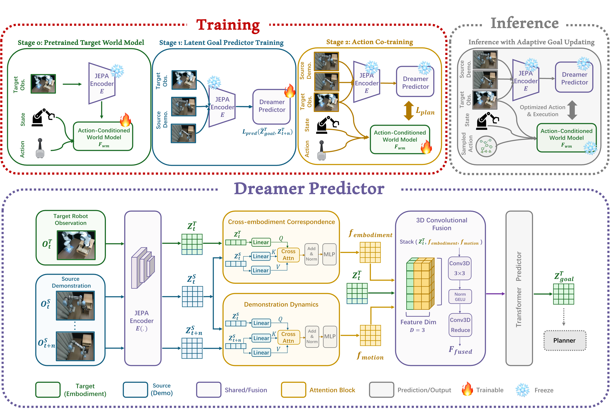

Paper Reading · Robotics World Models
Demo-JEPA：把跨具身模仿从动作复制改成 latent goal planning
这篇论文的核心不是“看一段视频然后直接输出动作”，而是把 source robot 的演示解释成 target robot 可执行的未来 latent goal。Dreamer Predictor 负责把异构演示翻译到目标具身的 JEPA latent， V-JEPA 2.1 action-conditioned world model 再用 CEM 做在线规划。
0. 一句话结论
痛点：跨具身 imitation 里，source robot 的动作不能直接给 target robot 用，像素未来又包含大量外观和机器人形态差异。 核心招：Demo-JEPA 把 demonstration 当作“未来意图”的视觉规格，训练 Dreamer Predictor 把 \((o^s_i,o^s_{i+\Delta},o^t_k)\) 翻译成 target-compatible latent goal \(\hat z^t_{goal}\)，再由目标机器人自己的 action-conditioned world model 用 CEM 搜动作去达到它。 效果：在 RLBench 和真机 UR5e-to-Franka 上，Demo-JEPA 在 cross-embodiment bridging 和 zero-shot generalization 明显优于 VPP/XSkill； 但在最接近训练分布的 behavior grounding 上，VPP 或 Demo-DP 仍可能更强。 代价：它不是零数据 one-shot：训练阶段仍需要大量 source-target paired visual trajectories、目标机器人交互轨迹、V-JEPA 2.1 初始化和在线 CEM 规划。
- 核心 insight
- 跨具身模仿的 transferable object 不是 action，也不一定是 pixel video，而是 target embodiment 能规划到的 latent future state。
- 最值得搬走的设计
- 把“执行某个任务”建模为一串可更新的 latent subgoals；动作只是目标机器人在自己的动力学模型里求解出来的局部控制变量。
1. 论文定位
任务是 one-shot cross-embodiment imitation：测试时给 target robot 一段 source robot 的视觉演示， target robot 要完成同语义任务。source 和 target 可以有不同机械臂、不同运动学、不同动作空间，论文仿真里是 Sawyer-to-Franka， 真机是 UR5e-to-Franka。
这和普通 behavior cloning 的区别在于：演示视频里的 action 不属于 target robot；这和单纯 video prediction 的区别在于： 目标不是预测 source robot 会怎么动，而是把 source 的意图变成 target robot 可达到的状态。Demo-JEPA 的范式更接近 latent goal-conditioned planning。
| 路线 | 把演示当作什么 | 主要瓶颈 | Demo-JEPA 的差异 |
|---|---|---|---|
| Action cloning / retargeting | source action 或 end-effector trajectory | 依赖动作对应、机器人标定、运动学 retargeting | 不直接预测 source action，只预测 target latent goal |
| VPP | future-aware visual representation | in-domain 强，但跨具身和 zero-shot shift 下容易过拟合轨迹规律 | 把 future representation 显式转成 target-compatible goal，再规划执行 |
| XSkill | skill prototype / skill sequence | 需要抽 skill，复杂接触动作和新配置下匹配不稳 | 不做离散 skill matching，而做连续 JEPA latent goal translation |
| Naive V-JEPA latent goal | source future latent 直接当 goal | V-JEPA latent 本身不保证跨具身可执行 | Dreamer Predictor 学 source-to-target latent translation |
2. 方法总览
Demo-JEPA 分三段：先有目标机器人的 action-conditioned JEPA world model；再训练 Dreamer Predictor 从 source demo 推断 target latent future； 最后把 Dreamer 的 latent goal 接到 world model + CEM planner 上执行。

source demo segment: (o_s_i, o_s_{i+Delta})
current target observation/state: (o_t_k, s_t_k)
-> shared JEPA encoder E
z_t_k, z_s_i, z_s_{i+Delta}: roughly (B, N=16*16, D)
-> Dreamer Predictor
embodiment cross-attn: target/current asks source/current
motion cross-attn: source/future asks source/current
Conv3D fusion + self-attention
output: z_goal_hat, target-compatible latent future
-> action-conditioned world model F_wm
rollout candidate actions a_{k:k+H-1}
-> CEM planner
choose action sequence minimizing latent distance to z_goal_hat
-> execute first action, observe new target state
-> adaptive goal update: reached goal then advance demo reference; otherwise keep trying关键张量可以按 \(z\in\mathbb{R}^{B\times N\times D}\) 理解。公开配置用 256 crop、patch size 16，所以单帧视觉 token 数 \(N=16\times16=256\)； V-JEPA 2.1 giant encoder 的 hidden dimension 在代码里默认是 1408，action-conditioned predictor 的 predictor dimension 是 1024。
这里有一个容易误读的点：Dreamer Predictor 输出的不是语言级“intent token”，也不是 policy hidden state，而是一张保留空间布局的 JEPA latent feature map。 它既要表达“source 想把杯子拿起来”，又必须落在 target robot world model 能滚动和比较的 latent manifold 上。
3. 关键创新点
创新点 1：把 demonstration 从 action 监督改成 latent future specification
旧方法为什么不行：source robot 的关节、夹爪、速度限制、工作空间和 target robot 不一样。即使两者都能完成“按按钮”，source 的轨迹也不等价于 target 的动作。 直接从视频回归 target action 会把“任务语义”和“source embodiment 的运动方式”缠在一起。
它怎么改：Demo-JEPA 不学 \(a^s\rightarrow a^t\)，而学 \((z^t_k,z^s_i,z^s_{i+\Delta})\rightarrow \hat z^t_{goal}\)。source demo 只负责指出语义上应该发生的变化；target current observation 负责告诉模型“这个变化在目标机器人当前状态下应该长什么样”。
为什么会有效：latent goal 把任务意图和执行机制解耦。目标机器人动作由自己的 world model 和 planner 求解，所以只要 Dreamer 给出的未来 latent 在 target dynamics 下可达，就不需要 source-target action correspondence。
代价/限制：这个解耦依赖两个前提：JEPA latent 能保留任务相关物体状态，且 action-conditioned world model 足够准确。论文结论里也承认，复杂高精度任务会受 world model 瓶颈限制。
创新点 2：Dreamer Predictor 做 source-to-target latent translation
旧方法为什么不行：直接拿 source future latent 当 planning goal 会失败。论文的 V-JEPA 2.1 naive reference 在仿真和真机表里都是失败项，说明共享 JEPA encoder 并不自动提供跨具身可执行性。
它怎么改：Dreamer Predictor 有两条 cross-attention：一条学 embodiment correspondence，一条学 source motion。论文公式是：
为什么会有效：\(f_{emb}\) 让 target 当前状态去对齐 source 当前状态，处理“我现在和演示里的起点怎么对应”； \(f_{mot}\) 从 source current 到 source future 抽运动意图，处理“演示接下来想改变什么”。Conv3D fusion 保留 patch grid 的空间结构，避免简单平均把动作方向和局部接触信息抹掉。
实现细节：代码在 src/models/dreamer_predictor.py 里实现。DreamerPredictor.forward(xt, yt, yt_plus_1)
输入三个 \([B,N,D]\) token map；先得到 x_embodiment 和 y_motion，再 torch.stack([xt, x_embodiment, y_motion], dim=-1) 成
\([B,N,D,3]\)，reshape 到 \([B,H,W,D,3]\)。Conv3dFusionNetwork 把 3 个 feature source 先升到 up_dim=64，过多层 kernel \((1,3,3)\) 的 Conv3D，再降回 1 个 fused map。
创新点 3：CEM 在 target world model 里执行，而不是把 Dreamer 变成 policy
旧方法为什么不行：如果 Dreamer 直接输出动作，它又会学到 target 动作分布，跨任务和跨配置的泛化压力很大。尤其 one-shot prompt 的时间进度和 target 当前状态未必严格同步。
它怎么改：Dreamer 只输出目标 latent；动作由 \(F_{wm}\) roll out 候选序列，CEM 选择让最终 latent 最接近 goal 的动作。
代价/限制：CEM 是在线采样优化，算力和延迟比单 forward policy 高；动作维度、action bound、gripper 离散化和 horizon 选择都会影响稳定性。
公开部署配置里 CEM 默认 samples=200、topk=10、cem_steps=50、rollout=1、maxnorm=0.1。
创新点 4：adaptive goal updating 解决跨具身进度不同步
旧方法为什么不行：source demo 每过一帧就推进 reference，会假设 target robot 也按同样速度完成子目标。跨具身时 target 可能更慢、路径更绕，固定推进会导致 planner 追逐过早的未来状态。
它怎么改：执行后计算当前 target latent 和上一个 goal 的距离 \(D_k=d(z^t_{k+1},\hat z^t_{goal})\)。只有 \(D_k<\epsilon\) 时才推进 source reference；否则 bypass Dreamer，继续向旧 goal 规划。
实现细节：app/vjepa_2_1_dreamer_ac/deploy.py 的 select_reference_pair 会把最近观测 latent 放进长度为 queue_horizon=4 的 buffer，
取 buffer 到 prev_goal 的最小 L1 距离；小于 l1_threshold 才 pop_and_update()。默认部署配置里阈值是 1.0。
4. 训练和推理流程
Stage 0：目标机器人 action-conditioned world model
先训练或加载 V-JEPA 2.1 action-conditioned world model。输入是 target robot 视觉 observation、机器人 state 和 action，输出未来 JEPA latent。
代码的 VisionTransformerPredictorAC 会把每一帧的 action token 和 state token 插入视觉 tokens 前面，再用 frame-causal transformer 预测下一段 latent。
Stage 1：Dreamer Predictor
输入是 paired visual trajectories：target 当前帧、target future frame、source current reference、source future reference。 训练目标是让 Dreamer 输出接近 target future latent。论文写成 L2：
但公开代码里 app/vjepa_2_1_dreamer_predictor/train.py 实际用的是
F.l1_loss(dreamer_output, target_feature, reduction='mean')，MSE 和 cosine loss 都是注释掉的备选项。
这属于论文公式和 release code 的轻微差异。
论文还加了 temporal perturbation：训练时把 source current reference 从 \(i\) 随机扰动成 \(i+\delta\)，让模型不要过度依赖精确时间对齐。
Stage 2：action co-training
冻结 Dreamer Predictor，微调 \(F_{wm}\)，让 world model rollout 更贴近 Dreamer 生成的 goal distribution。代码里同时算 teacher-forcing 预测
z_tf 和 autoregressive rollout z_ar，loss 是二者对 Dreamer target 的误差之和：
公开 config 里 loss_exp=1.0，所以实现更接近 L1；论文正文为 L2 形式。这个阶段的作用不是让 Dreamer 学动作，而是让目标机器人 world model 更适配 Dreamer 的 latent goal 分布。
Inference：one-shot source demo 到动作执行
- 加载 source demonstration HDF5，按
ref_data_fps=30到ref_target_fps=5下采样成 reference pool。 - 每个控制 step 读取当前 target image 和 pose，编码成 \(z^t_k\)。
- 选取当前 source reference pair，Dreamer 预测 \(\hat z^t_{goal}\)。如果上一 goal 未达成，则继续复用旧 goal。
- CEM 在 action space 中采样 delta xyz、rpy、gripper，world model rollout 后用 latent L1/L2 选 top-k 更新分布。
- 执行第一步 action，进入下一轮。
5. 公式和算法逐项讲解
公式 1：JEPA latent state
\(E\) 是共享视觉 encoder。\(N\) 是 patch token 数，256 crop + patch 16 时 \(N=256\)。\(D\) 是 encoder hidden size。
代码里训练和部署常会对 latent 做 F.layer_norm(...)，这会影响距离阈值和 CEM objective 的尺度。
公式 2：Dreamer 的两条 cross-attention
第一条是 target-current query source-current，用于建立跨具身对应；第二条是 source-future query source-current，用于抽 source transition。
【不确定】论文公式里第二条 query/key/value 的方向和代码注释略有命名差异；公开代码实际调用是
motion_cross_attn(yt, yt_plus_1)，具体 Q/K/V 取决于 CrossAttentionBlock 内部实现。验证方式是继续追 src/models/utils/modules.py 的 forward 签名，并用 hook 打印 attention 输入。
公式 3：Dreamer supervised loss
这是把 source demo 的未来意图监督成 target future latent。实现上公开代码用 L1；这会让训练对局部 outlier 更稳，但也意味着论文表述的 L2 不是 release 默认。
公式 4：CEM planning objective
CEM 维护 action sequence 的均值和方差，采样 \(N\) 条候选，world model rollout，按 final latent 到 goal 的距离取 top-k，再用 momentum 更新均值/方差。 代码里的 objective 默认是 patch-token 维度上的平均 L1，gripper channel 会被 clip 或 round。
公式 5：adaptive reference advancement
这个规则把 source demo 的时间推进从固定时钟变成“目标是否达到”的反馈。它很简单，但对长任务很关键：没有它，source reference 会在 target 还没完成子目标时继续前滚。
6. 训练与推理细节对齐
| 检查点 | 训练时 | 推理时 | 风险 |
|---|---|---|---|
| Source-target 对齐 | 仿真可用 retargeted replay 做时序匹配；真机用 GTCC progress-aware feature alignment | 只有一段 source prompt，靠 adaptive update 保持进度 | 训练仍需要 paired visual trajectories，不是完全 unaligned imitation |
| Dreamer 输入 | target current、target future、source current、source future 都可见 | target future 不可见，只输出 latent goal | 如果 current target 离训练分布太远，goal 可能不可达 |
| World model rollout | Stage 2 同时训练 teacher-forcing 和 autoregressive 预测贴近 Dreamer goal | CEM 反复调用 \(F_{wm}\) 评估候选动作 | 短 horizon 稳，长 horizon 累积误差大 |
| Distance threshold | 由 latent normalization、任务和 reference fps 间接决定 | l1_threshold 控制是否推进 reference |
阈值太小会卡住，太大会过早推进 |
| Action representation | README 说不直接用原始 HDF5 action，而是基于下采样 qpos 重新计算 action | CEM 采样 delta xyz/rpy/gripper 并发给 server | action scale、姿态表示、gripper 语义要和 robot server 严格一致 |
这篇方法的关键 mismatch 不是 teacher forcing，而是 goal distribution mismatch： Dreamer 产生的 latent goal 未必像真实 target future latent。Stage 2 的 action co-training 就是在修这个问题，让 \(F_{wm}\) 的 rollout distribution 更贴近 Dreamer goal distribution。
7. 实验复盘
实验分仿真和真机。仿真用 RLBench，source demonstration 来自 Sawyer，target policy 是 Franka；真机用 UR5e 视觉 prompt 指导 Franka。 评测按分布偏移强度分三组：Behavior Grounding、Cross-Embodiment Bridging、Zero-Shot Generalization。
| Setting | Method | Behavior | Bridging | Zero-shot | 解读 |
|---|---|---|---|---|---|
| Simulation | VPP | 0.47 | 0.28 | 0.04 | in-domain 行为 grounding 最强，但 shift 下掉得很快 |
| Simulation | XSkill | 0.39 | 0.17 | 0.03 | skill prototype 对复杂跨具身泛化不足 |
| Simulation | Demo-JEPA | 0.31 | 0.45 | 0.36 | 不是 behavior suite 最强，但 shift 越大优势越明显 |
| Real-world | VPP | 0.65 | 0.53 | 0.00 | 熟悉场景强，zero-shot 几乎失效 |
| Real-world | XSkill | 0.45 | 0.40 | 0.05 | 略有泛化但不稳定 |
| Real-world | Demo-JEPA | 0.43 | 0.55 | 0.25 | 跨具身和 zero-shot 最强，但绝对成功率仍不高 |
消融最有信息量的是 V-JEPA reference comparison。Naive V-JEPA 2.1 直接拿 source future latent 当 goal 基本失败； Oracle V-JEPA 2.1 用 target ground-truth future latent 当 goal，很强但部署不可用。Demo-JEPA 介于二者之间，说明 Dreamer 的实际作用就是补上 “source latent 到 target-compatible latent”的 translation。
Conv3D ablation 也支撑方法假设：去掉 Conv3D 改成 mean pooling 后，仿真 zero-shot 从 0.36 降到 0.29，真机 bridging 从 0.55 降到 0.40。 这说明 structured spatial-temporal fusion 对跨具身动作尤其重要。
需要批判地看三点。第一，训练数据规模不小：仿真 Stage 1 是 86 tasks / 13444 trajectories，Stage 2 是 39 tasks / 8324 trajectories； 真机 Stage 1 是 22 tasks / 4508 trajectories，Stage 2 是 19 tasks / 3903 trajectories。第二，zero-shot 是在作者定义的 held-out configuration 上，不等于开放世界泛化。 第三，VPP/XSkill 和 Demo-JEPA 的 inductive bias 不同，比较公平性取决于每个 baseline 的 tuning 和数据管线是否同等成熟。
8. 代码实现笔记
| 文件 | 作用 | 值得注意的点 |
|---|---|---|
src/models/dreamer_predictor.py |
Dreamer Predictor | cross-attention + Conv3D fusion + self-attention；fusion 可切换 conv3d 或 mean pooling |
src/models/ac_predictor.py |
Action-conditioned JEPA predictor | 每帧插入 action/state tokens；frame-causal attention mask；输出回 encoder embed dim |
app/vjepa_2_1_dreamer_predictor/train.py |
Stage 1 训练 | release code 用 L1 loss；可选 target encoder；对 Dreamer 参数做 max grad norm 1.0 |
app/vjepa_2_1_dreamer_ac/train.py |
Stage 2 co-training | Dreamer no-grad 生成目标；predictor 同时做 teacher-forcing 和 autoregressive rollout loss |
app/vjepa_2_1_dreamer_ac/cem_utils.py |
CEM planner | 默认 action 是 xyz/rpy/gripper；top-k elite 更新 mean/std；可固定 gripper 或只采样 xyz |
app/vjepa_2_1_dreamer_ac/deploy.py |
部署闭环 | socket 连接 robot server；reference pool；adaptive reference advancement；bfloat16 autocast |
scripts/rlbench_tools |
仿真数据采集 | 支持多机器人 embodiment 数据采集；README 强调 action 由下采样 qpos 重新计算 |
【不确定】公开仓库里的 config 路径和 README 示例有轻微不一致：README 写 configs/train/vjepa_2_1/...，
实际仓库是 configs/train/vjepa_2_1_dreamer_predictor.yaml 这类扁平路径；script 里也有 dremer 拼写问题。
合理解释是 README 从内部目录迁移后未完全同步。复现时应以实际仓库路径和 app/main.py --fname configs/train/... 为准。
【不确定】论文正文说 Stage 1/Stage 2 使用 L2，代码 release 使用 L1 或 loss_exp=1.0。合理猜测：作者内部实验可能用过 L2，release 改成 L1 以稳定训练；
或论文把 latent distance 统一写成平方误差。验证方式是查 checkpoint training logs 或向作者确认最终表格对应的 loss。
9. 可复现清单
- 环境：Python 3.12、PyTorch、V-JEPA2 代码基、RLBench/PyRep/CoppeliaSim；README 还要求
diffusers==0.11.1并提示可能要手动删cached_downloadimport。 - 视觉输入：crop size 256、patch size 16、tubelet size 2、FPS 5、context frames 8；augmentation 论文表里是 disabled。
- 优化：AdamW、base lr \(4.25\times10^{-4}\)、warmup 15 epochs、total 315 epochs、weight decay 0.04。
- Stage 0：predictor depth 24、embed dim 1024、heads 16、frame-causal true、modality embedding true。
- Stage 1：batch size 16、Conv3D fusion、4 self-attn blocks、MLP ratio 4.0、up dim 64、LayerNorm、init std 0.02。
- Stage 2：batch size 16，重点检查 Dreamer 是否 freeze、world model predictor 是否 unfreeze、teacher-forcing 与 autoregressive loss 是否都开。
- 数据格式：Aloha HDF5，至少要有
observations/images/<camera_key>、observations/qpos、重新计算的action。 - 真机对齐：UR5e 和 Franka 独立演示要做 progress-aware alignment；论文用 GTCC feature alignment，仓库没有把这部分写成开箱即用 pipeline。
- 部署：调
l1_threshold、queue_horizon、CEMsamples/topk/steps/maxnorm；这些比论文正文更影响真机稳定性。 - 安全：CEM 输出是 delta pose 和 gripper 指令，真机必须有 workspace clamp、速度限制、碰撞检查和 emergency stop。
10. 对 FastWAM / 具身操作的启发
对我们之前讨论的 WAM/FastWAM，这篇最有用的不是 JEPA 这个名字，而是 action execution 的建模边界： 不要把 one-shot 样本直接建成 action sequence；把它建成目标系统可执行的 latent progress specification。
- 改动点 1：从 action token 转成 goal/progress token
- 如果你没有标准化 action，就让一次任务执行产生 \(g_1,g_2,\ldots,g_m\) 这样的 latent subgoal/progress tokens。动作由后端 controller 或 planner 解。
- 改动点 2：intent token 不必是离散类别
- MINT 那种 intent token 可以借鉴，但在这里更适合做 continuous latent intent：它应该能被世界模型比较、rollout、更新，而不是只给 policy 做 conditioning。
- 改动点 3：execution module 要和 representation 解耦
- FastWAM 可以让 high-level module 预测“下一步世界应该变成什么”，low-level module 用自己的动作空间实现。这样新 embodiment 只需要重训/适配 low-level dynamics。
- 改动点 4：进度判断比动作预测更重要
- adaptive goal updating 是一个很实用的闭环机制。FastWAM 里也应该有 reachability/progress score，而不是按固定时间推进 subgoal。
11. 可能的改进方向
- Uncertainty-aware latent goal。 改动点：Dreamer 输出 goal distribution 或 ensemble uncertainty；预期收益：planner 避免追不可达 goal；风险：CEM objective 更复杂；验证：按 uncertainty 分桶看成功率和回退次数。
- Learned progress model 替代固定阈值。 改动点：训练一个 \(p(\mathrm{reached}\mid z_t,\hat z_{goal},history)\)；预期收益：不同任务不用手调 L1 threshold；风险：需要 reached 标签或自动标注；验证：与固定阈值比较 long-horizon completion。
- 多视角/3D latent goal。 改动点：把 Dreamer goal 从单视角 JEPA patch map 扩展到多视角或 3D latent points；预期收益：减少遮挡和接触歧义；风险：数据采集和配准成本上升；验证：遮挡、多物体、需要绕障抓取的任务。
- CEM + diffusion policy hybrid。 改动点：用 diffusion policy 提供 action proposal，CEM/world model 做 rerank 或修正；预期收益：保留 DP 的局部动作先验，同时保留 world model zero-shot 能力；风险：两个模块误差耦合；验证：behavior grounding 和 zero-shot 同时测。
- 不成对 demonstration training。 改动点：把 paired trajectory alignment 改成 cycle consistency、optimal transport 或 contrastive progress matching；预期收益：降低跨机器人数据采集门槛；风险：语义错配更难排查；验证：逐步减少 paired data，比较 Dreamer goal accuracy。
- Contact-aware latent distance。 改动点：planner objective 不只比较平均 token L1，而加 object/contact/keypoint 权重；预期收益：高精度接触动作更稳；风险：需要分割、关键点或触觉监督；验证：按按钮、开合盖、插入类任务。
12. 速读备忘卡
- Demo-JEPA 解决的是 cross-embodiment imitation，不是普通 BC。
- 它的核心不是预测动作，而是把 source demo 翻译成 target-compatible latent goal。
- Dreamer Predictor 输入 target current、source current、source future，输出 target future latent。
- 两条 cross-attention 分别处理 embodiment correspondence 和 source motion。
- Conv3D fusion 保留空间结构，消融显示对真实跨具身和复杂动作有帮助。
- 动作由 V-JEPA 2.1 action-conditioned world model + CEM 规划出来。
- adaptive goal updating 用 latent distance 判断是否推进 source reference。
- 论文说 L2，公开代码 Stage 1/Stage 2 更像 L1，需要复现时确认。
- Demo-JEPA 在 behavior grounding 不一定赢；它赢在 distribution shift 变大时。
- 训练不是零数据：需要 paired visual trajectories 和 target action trajectories。
- 对 FastWAM 的启发：one-shot task execution 应该建成 latent progress/subgoal，而不是硬编码 action。